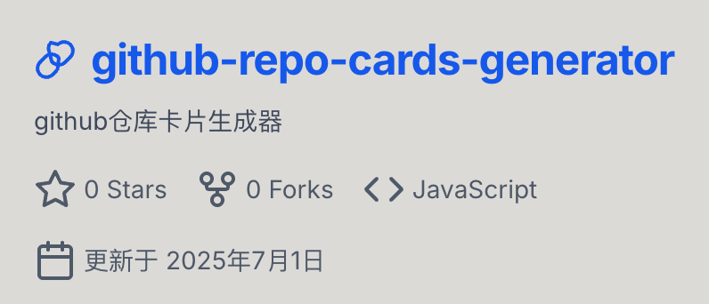

💼 我的项目
探索技术的无限可能，记录学习与成长的足迹
AstrBot 成语接龙插件
为 AstrBot 机器人开发的成语接龙游戏插件，提供智能成语接龙、成语释义查询、游戏数据统计等功能。支持多用户同时游戏，具备完善的错误处理和数据持久化机制。
Python
AstrBot
自然语言处理
游戏机制
数据存储
游戏插件
机器人
2025
AstrBot 飞花令插件
传统文化飞花令游戏的机器人插件实现，支持诗词对答、难度分级、计时挑战等功能。内置丰富的诗词数据库，提供多种游戏模式和智能提示系统。
Python
AstrBot
诗词文化
正则匹配
文本处理
文化游戏
智能匹配
2025
个人技术博客
基于 Hexo + Butterfly 主题构建的个人技术博客，记录学习笔记和技术思考。包含25篇技术文章，涵盖前端开发、算法、网络安全等领域。已累计 2161 次浏览，1617 位访客。
Hexo
Butterfly
JavaScript
GitHub Pages
Markdown
2161 浏览
1617 访客
2024-2025

GitHub 仓库介绍卡片生成器
一个现代化的 React 应用程序，用于生成美观的 GitHub 仓库介绍卡片。支持链接直接解析、手动输入两种模式，采用纯 Canvas 渲染技术，提供高质量图片导出功能，具备响应式设计和双重保存模式。
React 18
Tailwind CSS
Canvas API
GitHub API
响应式设计
卡片生成器
API 集成
2025
项目概览
4
核心项目
2
机器人插件
1
React 应用
25+
技术文章